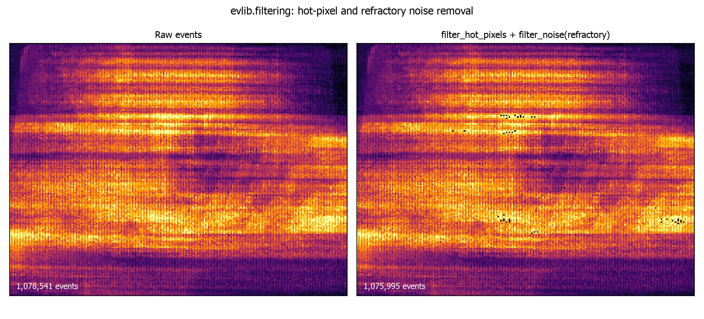

Event Filtering¶
Raw event streams carry sensor noise, hot pixels and regions or time ranges
you do not need. evlib.filtering provides lazy, Polars-based filters for
each of these problems, plus a preprocess_events pipeline that runs them in
one call.
Overview¶
Every function in the module takes a Polars LazyFrame or DataFrame (the
result of evlib.load_events) and returns a LazyFrame. Nothing is computed
until you call .collect(), so filters chain together into a single query
plan and can run on the CPU, the streaming engine, or the cudf GPU engine via
the engine argument.
import evlib
import evlib.filtering as evf
events = evlib.load_events("data/slider_depth/events.txt")
print(f"Loaded {len(events.collect()):,} events")
# Keep only the first second, then only positive-polarity events.
# Chaining stays lazy until the final .collect().
filtered = evf.filter_by_time(events, t_start=0.0, t_end=1.0)
filtered = evf.filter_by_polarity(filtered, polarity=1)
print(f"After filtering: {len(filtered.collect()):,} events")
The slider_depth text file encodes polarity as 0/1 (0 for negative, 1 for
positive), not -1/1. Check df["polarity"].unique() on data you have not
seen before, since the encoding varies between sources.
filter_by_time¶
filter_by_time(events, t_start=None, t_end=None, engine="auto") keeps
events whose timestamp falls in [t_start, t_end], given in seconds.
Either bound can be None to leave that side open. Internally the seconds
are converted to microseconds to compare against the t Duration column, so
you never have to do that conversion yourself.
import evlib
import evlib.filtering as evf
events = evlib.load_events("data/slider_depth/events.txt")
# Events between 0.1s and 0.5s
windowed = evf.filter_by_time(events, t_start=0.1, t_end=0.5)
print(f"Events in [0.1s, 0.5s]: {len(windowed.collect()):,}")
# Open-ended: everything from 3.0s onward
tail = evf.filter_by_time(events, t_start=3.0)
print(f"Events from 3.0s onward: {len(tail.collect()):,}")
filter_by_roi¶
filter_by_roi(events, x_min, x_max, y_min, y_max, engine="auto") keeps
events whose x and y both fall inside the given bounds, inclusive on
both ends. slider_depth is a 240x180 sensor, so a centred region of
interest looks like this:
import evlib
import evlib.filtering as evf
events = evlib.load_events("data/slider_depth/events.txt")
roi = evf.filter_by_roi(events, x_min=50, x_max=180, y_min=40, y_max=140)
print(f"Events in ROI: {len(roi.collect()):,}")
Passing x_min > x_max or y_min > y_max raises ValueError immediately,
rather than silently returning zero rows.
filter_by_polarity¶
filter_by_polarity(events, polarity, engine="auto") keeps events whose
polarity column matches the given value, or any value in a list. The
values to pass depend on how the source data encodes polarity: slider_depth
uses 0/1, other sources may use -1/1.
import evlib
import evlib.filtering as evf
events = evlib.load_events("data/slider_depth/events.txt")
positive = evf.filter_by_polarity(events, polarity=1)
negative = evf.filter_by_polarity(events, polarity=0)
print(f"Positive: {len(positive.collect()):,}, negative: {len(negative.collect()):,}")
# A list keeps events matching any of the given values.
both = evf.filter_by_polarity(events, polarity=[0, 1])
print(f"Both polarities: {len(both.collect()):,}")
filter_hot_pixels¶
Some pixels fire far more often than their neighbours because of sensor
defects rather than real scene motion. filter_hot_pixels(events,
threshold_percentile=None, engine="auto") counts events per (x, y)
coordinate, then drops every event at a coordinate whose count exceeds the
given percentile of the per-pixel count distribution. The default threshold
is the 99.9th percentile.
import evlib
import evlib.filtering as evf
events = evlib.load_events("data/slider_depth/events.txt")
before = len(events.collect())
cleaned = evf.filter_hot_pixels(events, threshold_percentile=99.9)
after = len(cleaned.collect())
print(f"Removed {before - after:,} events from hot pixels ({before:,} -> {after:,})")
A lower threshold_percentile (for example 95.0) removes more pixels and is
more aggressive.
filter_noise¶
filter_noise(events, method=None, refractory_period_us=None,
engine="auto") implements refractory-period denoising: at each pixel, an
event is dropped if it arrives within refractory_period_us microseconds of
the previous event at that same pixel. "refractory" is the only
implemented method, and is used by default. The default period is 1000us
(1ms), which barely touches slider_depth; a longer period makes the effect
visible.
import evlib
import evlib.filtering as evf
events = evlib.load_events("data/slider_depth/events.txt")
before = len(events.collect())
denoised = evf.filter_noise(events, method="refractory", refractory_period_us=10_000)
after = len(denoised.collect())
print(f"Removed {before - after:,} events within a 10ms refractory period")
filter_noise sorts by t internally, so you do not need to pre-sort the
input (evlib.load_events already sorts by default).
The figure below shows both filters applied together: a per-pixel event-count
heatmap of the raw stream (left, hot pixels visible as bright points) next to
the same window after filter_hot_pixels and filter_noise(method="refractory")
(right).

filter_multiple_rois¶
filter_multiple_rois(events, rois, engine="auto") is the multi-region form
of filter_by_roi: it keeps events that fall inside any of a list of
(x_min, x_max, y_min, y_max) tuples, combined with logical OR.
import evlib
import evlib.filtering as evf
events = evlib.load_events("data/slider_depth/events.txt")
rois = [
(0, 100, 0, 90), # top-left quadrant
(140, 239, 90, 179), # bottom-right quadrant
]
corners = evf.filter_multiple_rois(events, rois=rois)
print(f"Events in either ROI: {len(corners.collect()):,}")
preprocess_events¶
preprocess_events combines the filters above into a single preprocessing
pipeline, applied in a fixed order chosen for performance: time, then ROI,
then polarity, then hot-pixel removal, then noise filtering. Every stage is
optional and controlled by its own arguments.
import evlib
import evlib.filtering as evf
events = evlib.load_events("data/slider_depth/events.txt")
processed = evf.preprocess_events(
events,
t_start=0.1, t_end=1.0,
roi=(0, 239, 0, 179),
polarity=1,
remove_hot_pixels=True,
hot_pixel_threshold=99.9,
denoise=True,
refractory_period_us=1000.0,
)
print(f"Preprocessed: {len(processed.collect()):,} events")
The filtering order matters: time and ROI filters run first because they cut down the row count cheaply, before the more expensive hot-pixel and noise stages run on a smaller frame.
Choosing an engine¶
Every function accepts an engine argument: "auto" (default), "streaming"
for large files that do not fit comfortably in memory, or "gpu" (or a
pl.GPUEngine(...)) to run on cudf-polars where CUDA is available. The
argument only affects how Polars plans the eventual .collect(); the filter
itself stays lazy either way, so you can freely chain functions with
different engine hints and only the final collect matters.
import evlib
import evlib.filtering as evf
events = evlib.load_events("data/slider_depth/events.txt")
filtered = evf.filter_by_time(events, t_start=0.0, t_end=1.0, engine="streaming")
df = filtered.collect(engine="streaming")
print(f"Streaming collect: {len(df):,} events")
Next steps¶
- Filtering API Reference for the full parameter reference.
- Event Representations to convert filtered events into dense tensors.
- Polars-Based Event Preprocessing for writing custom filters as raw Polars expressions.